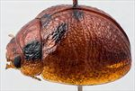
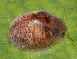
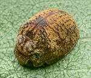
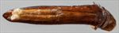
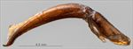
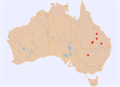

Click on images to enlarge


Female, Yuleba S.F., Miles, Queensland


Female, Cobar, New South Wales


Female, Capella, Queensland


Aedeagus, dorsal view (Yuleba S.F., Miles, Queensland)


Aedeagus, lateral view (Yuleba S.F., Miles, Queensland)


Distribution
Name
Trachymela sp. Ta114
Reference specimen
2002-021, Yuleba State Forest, Miles, Queensland.
Adult Description
Length: ♂ 4.2–4.7 mm (n=6), ♀ 4.0–5.2 mm (n=10).
Colouration:
- Head: light brown, usually with two dark or even black spots on frons, one on each side between centre and eye; labrum straw-brown; mandibles dark brown- or black-tipped; antennae uniformly straw-brown.
- Pronotum: brown, concolorous with head, with two prominent broad quadrate black maculae situated one on each side between eyes and humeral callus and extending from anterior to posterior edge, very rarely are these maculae reduced in size or not fully black.
- Scutellum: brown, concolorous with pronotum, usually narrowly edged in darker brown, almost invariably bordered in black.
- Elytra: brown, concolorous with pronotum, with a broad dark brown or (less commonly) black band extending from anterior elytral margin just above humeral callus to around elytral summit, often this band is interrupted, with only the anterior portion and the elytral summit dark, less commonly fragmented with only the elevated verrucae in it darker than surrounding surface; band of fuscous colour (never black or even dark brown) situated just inside margin of elytral disc extending from about its midpoint to apex; punctures similar to or a slightly darker shade than interstices; humeral callus similar to or slightly darker than surrounding area.
- Venter & Legs: light- to mid-brown, only rarely metaventrites somewhat darker in shade laterally; inside surface of elytral epipleura brown.
- Cuticular Wax: uniform light brown colour, distributed relatively evenly between the elevated ridges and verrucae on elytra posterior to a line from humeral callus to summit, much more sparsely anterior to that line (including head and pronotum).
Morphology:
- Shape: dorsal surface with noticeable discontinuity in curvature between pronotum and elytra; elytra strongly curved anteriorly to greatest height, from where curvature lessens and stays approximately constant almost to apex, some specimens appearing slightly gibbous in lateral view, greatest height well in front of middle of elytral margin.
- Head: punctures moderately large (pd ≈ 1.5–2× ef) and slightly unevenly and densely distributed; antennae short, particularly in females (AL/BL: ♂ 35–40%, ♀ 29–32%), filiform.
- Pronotum: almost evenly curved transversely; foveal depression absent, with epidermis usually slightly elevated in a small pustule behind eyes; discal area with surface noticeably uneven, the unevenness usually consisting of an elevated longitudinal ridge in centre and an elevated unevenly circular area on either side of this ridge; punctures similarly-sized to those on head, clearly to much more vaguely impressed, quite unevenly distributed with density lower and punctures sometimes coarser on elevated areas, many much finer punctures interspersed among the larger, punctures more coarse towards lateral margins; front margins join lateral margins in a broad and smoothly rounded right-angle, with lateral margin sometimes almost straight for a short section before curving smoothly and gradually towards rear margin, broadest just in front of posterolateral angle.
- Scutellum: punctured, with punctures similar in size and density but often better defined than those on pronotum.
- Elytra: surface evenly curved laterally; punctures distinct and relatively large, closely spaced and quite evenly distributed on disc and marginal area over anterior two-thirds of surface, becoming more closely spaced and smaller in posterior third, with a few very fine punctures scattered on interstices; a thin, often partially interrupted elevated ridge runs transversely from elytral summit across disc, sometimes continuing to margin with surface not noticeably depressed anterior to it; many laterally-oriented, wrinkle-like ridges scattered both in front of and behind central ridge, with a few small and mostly inconspicuous round or longitudinally extended verrucae scattered about surface primarily posterior to central ridge; two longitudinal rows of such verrucae, sometimes joined into interrupted ridges, situated close to elytral suture; suture carinate in posterior third, surface continuous under humeral callus; vertical extension of epipleura considerable (HCE/PW = 0.41–0.44).
- Venter: prosternal process almost parallel, open anteriorly; sparse scatter of setae present along prosternal process and on mesoventrite; a single long seta present on median and posterior trochanters, 1 or 2 on anterior trochanters; front edge of metaventrite beveled, slightly rounded; inner edge of epipleura lacking setae.
Male Genitalia (Aedeagus):
- Dimensions: moderately long, thin (LPE/BL=31–34%), needle-shaped.
- Dorsal view: sides of shaft slightly sinuate, narrowing slightly from basal sulcus to just before middle from where it widens gradually and smoothly to about middle of ostium, from where sides converge very gradually towards apex, the rate of convergence decreasing noticeably shortly before apex so that sides are briefly almost parallel before they converge at about 45° to longitudinal axis to form a triangular tip; dorsal surface smoothly curved with ostial depression forming a long thin oval extending back past middle with a broad dorsomedian channel extending further back almost to basal sulcus; dorsal ostial processes short, extending for only half length of ostium; spatula relatively large, tip little distinct from it.
- Lateral view: shaft curved through about 45° just past basal sulcus, then almost straight until about 20% from tip, where there is a noticeable downwards curve, thinning towards apex over final 20%, tip deflexed.
Immature Stages
Unknown.
Similar species
- Ta10: This species sometimes co-occurs with Ta114 and they can be rather difficult to separate on external morphology. See Ta10 for a discussion of the differences between these species, as well as the other species in the bicolora species group that may be confused with Ta114.
Notes
- Morphology: Individuals of Ta114 are among the smallest of all Trachymela.
- Distribution & Host Associations: The species occurs in eastern Australia, west of the Great Dividing Range, where it has been recorded from Eucalyptus populnea (Symphyomyrtus: Adnataria) and E. camaldulensis (Symphyomyrtus: Exsertaria).
Copyright © 2026. All rights reserved.